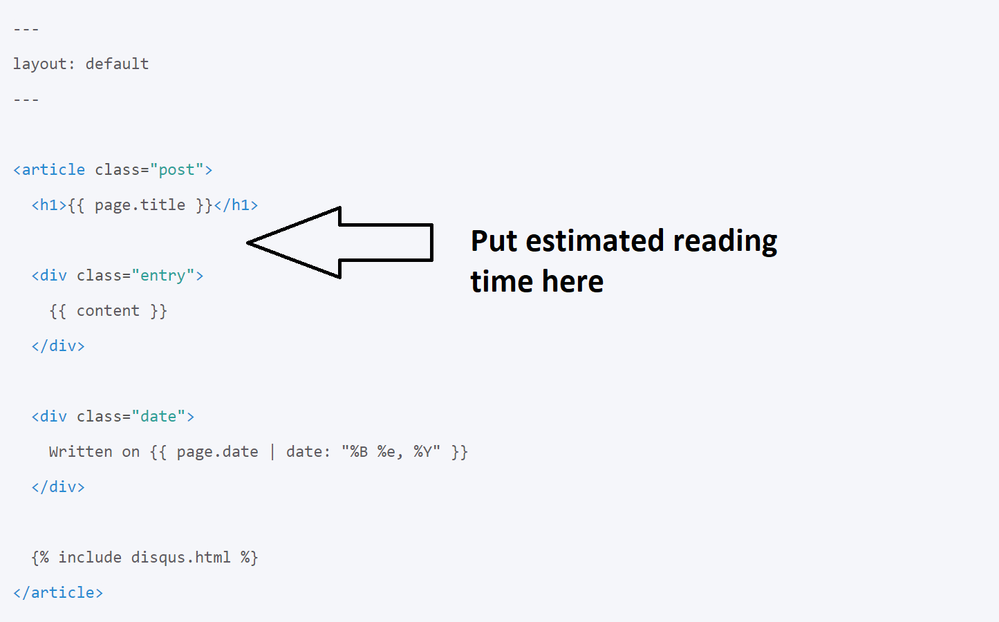

Some publishing platforms, such as Medium and some personal blogs show an estimated reading time for each story or article. Readers can decide if they want to commit the estimated reading time to finish the article. It is very easy to calculate the estimated reading time using Liquid tags and filter.
In this exercise, you are going to write a piece of code to calculate and display estimated reading time:
Open posts layout in your theme and write a piece of Liquid code to show estimated reading time:
Use: